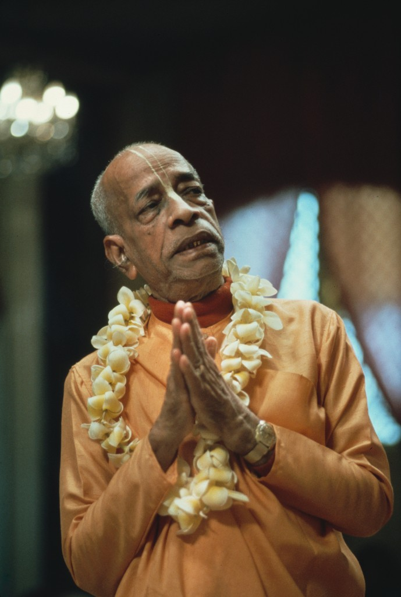
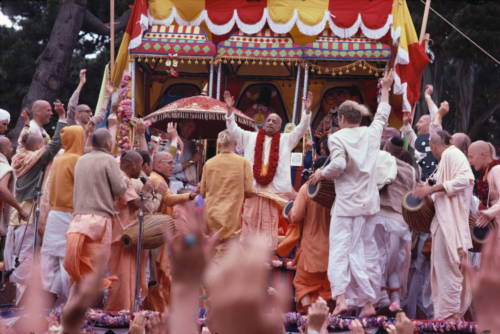
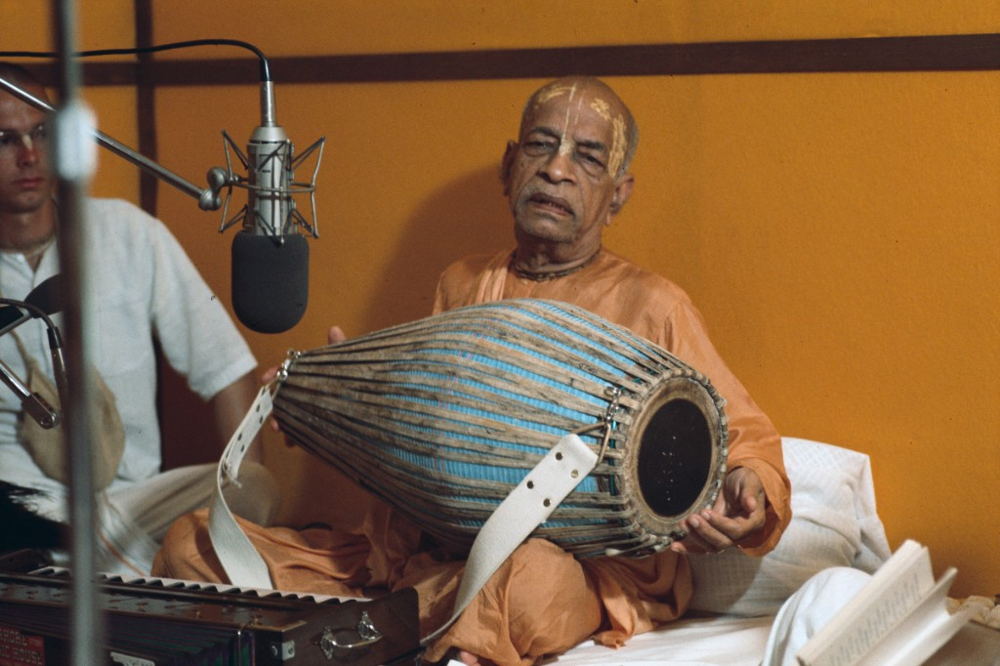
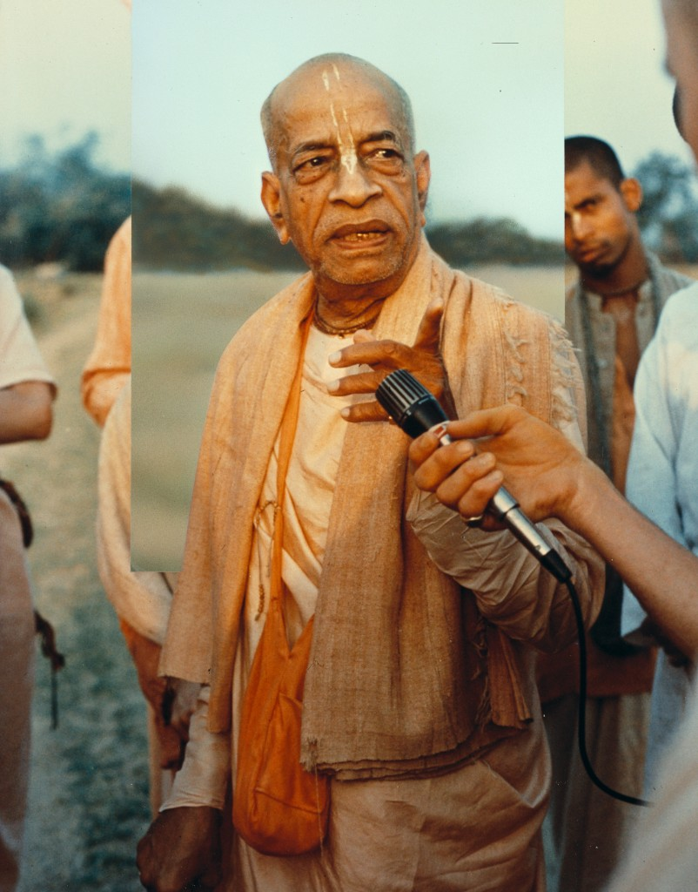
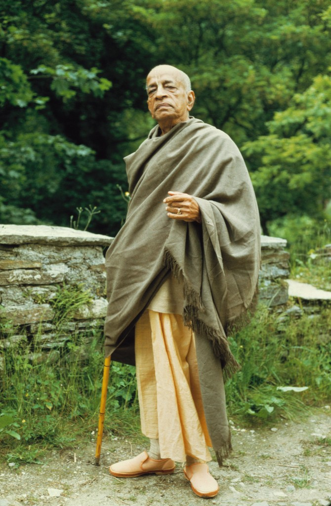
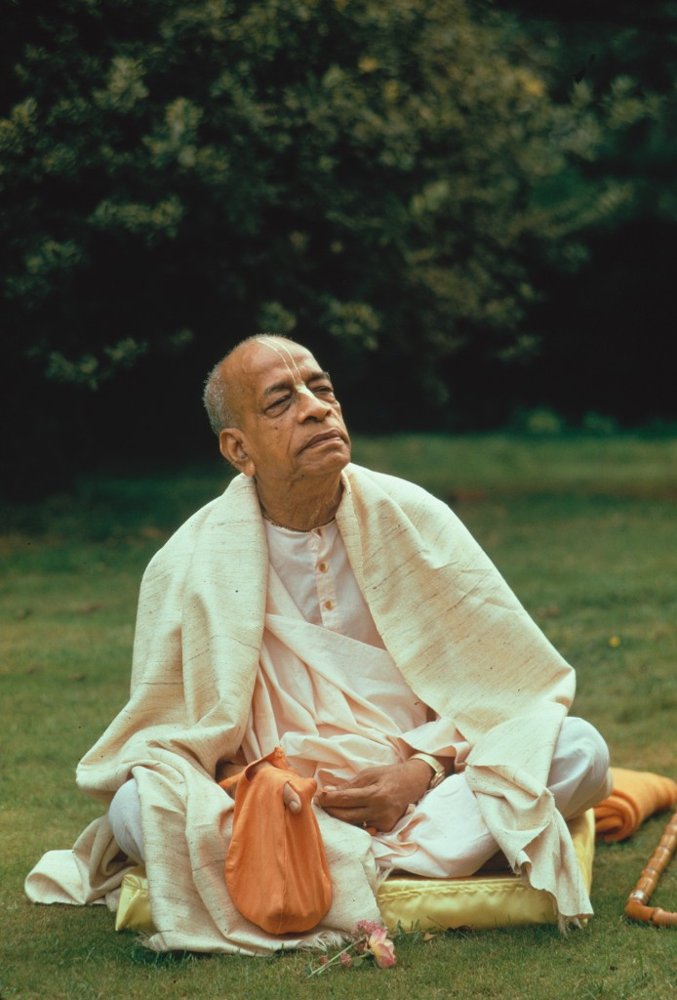

His Divine Grace Srila Prabhupada
Founder-Acharya of the International Society for Krishna Consciousness (ISKCON)

1896 – 1977
About Srila Prabhupada
His Divine Grace A.C. Bhaktivedanta Swami Srila Prabhupada was one of the most remarkable spiritual teachers of the twentieth century. Born Abhay Charan De on September 1, 1896, in Calcutta, India, he founded the International Society for Krishna Consciousness (ISKCON) and brought the ancient Vedic teachings of Bhakti Yoga to the Western world.
Despite arriving in New York at the age of 69, nearly penniless, speaking to small groups in a park, Srila Prabhupada established more than 108 temples worldwide, translated and commented on over 60 volumes of Vedic literature, and initiated thousands of disciples in just twelve years.
He passed away in Vrindavana, India, on November 14, 1977, leaving behind a spiritual legacy that continues to transform millions of lives around the world to this day.
A Life Dedicated to Lord Krishna
Key milestones in the extraordinary life of Srila Prabhupada
1896
Birth in Calcutta
Born Abhay Charan De on September 1st into a devout Vaishnava family in Calcutta, India. From childhood he showed deep devotion to Lord Krishna.
1922
Meeting His Spiritual Master
At 26, he met his spiritual master, Srila Bhaktisiddhanta Sarasvati Thakura, who instructed him to preach Krishna consciousness in English-speaking countries.
1944
Back to Godhead Magazine
Began publishing "Back to Godhead," a spiritual magazine dedicated to spreading Vaishnava teachings, which he produced single-handedly.
1959
Accepting Sannyasa
Received the renounced order of life (sannyasa) and began writing his monumental translation of the Srimad-Bhagavatam.
1965
Journey to America
At the age of 69, he crossed the Atlantic on a cargo ship — the Jaladuta — arriving in New York City with forty rupees and a trunk of books. This was his mission to the West.
1966
Founding ISKCON
Founded the International Society for Krishna Consciousness (ISKCON) in New York City on July 13, 1966, beginning with a small group of sincere students.
1966–1977
Global Expansion
Circled the globe 14 times, established 108+ temples on six continents, initiated over 5,000 disciples, and translated more than 60 volumes of Vedic scripture.
1977
Departure from This World
On November 14, 1977, Srila Prabhupada left this world physically in Vrindavana, India — the holy land of Krishna — surrounded by his loving disciples, leaving behind an eternal spiritual legacy.
Glimpses of Srila Prabhupada





Srila Prabhupada's Books
Over 60 volumes of Vedic scripture translated, commented and distributed worldwide
Bhagavad-Gita As It Is
The crown jewel of Vedic literature. Krishna's direct instructions to Arjuna.
Srimad-Bhagavatam
18,000 verses glorifying the Supreme Lord Krishna across 12 cantos.
Chaitanya-Charitamrita
Biography and teachings of Sri Chaitanya Mahaprabhu in 17 volumes.
The Nectar of Devotion
A complete science of Bhakti Yoga based on Rupa Goswami's Bhakti-rasamrita-sindhu.
Read Srila Prabhupada's Books Free Online
All of Srila Prabhupada's original books are available free of charge at prabhupadabooks.com. We especially recommend starting with the Bhagavad-Gita As It Is.
An Eternal Legacy
His Teachings & Legacy
Srila Prabhupada's teachings are as relevant today as when he first spoke them. He emphasised that the highest purpose of human life is to revive our constitutional relationship with God — and that this is achieved most easily in this age through the chanting of the Hare Krishna mantra.
His movement today encompasses over 650 temples, 65 rural communities, 100 vegetarian restaurants, and millions of followers worldwide. In Germany alone, there are numerous active communities carrying on his vision.
"My Guru Maharaja told me: preach. So I am simply trying to execute his order. That is my life's mission."— Srila Prabhupada